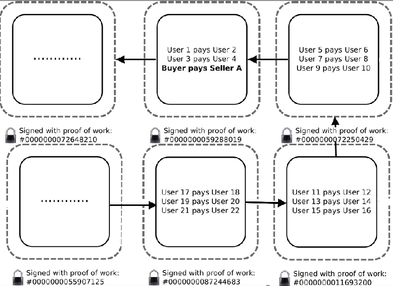
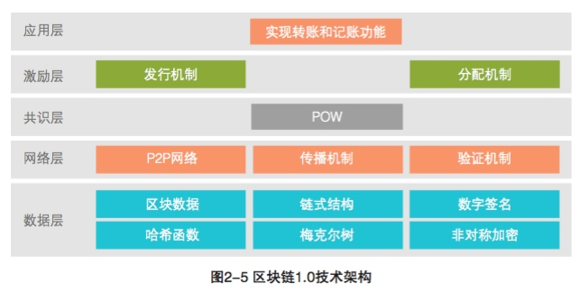
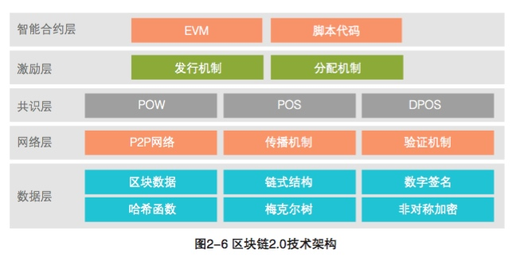
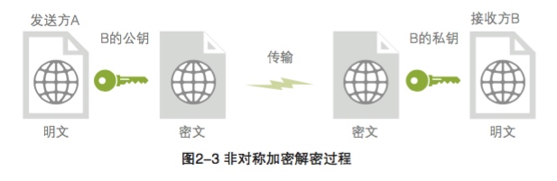
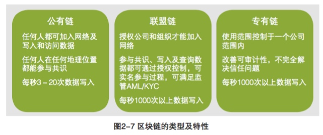
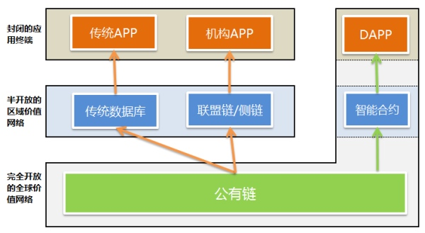

简单介绍下区块链(blockchain)的关键概念
基础
基本原理
基本概念包括：
- 交易（Transaction）：一次操作，导致账本状态的一次改变，如添加一条记录；
- 区块（Block）：记录一段时间内发生的交易和状态结果，是对当前账本状态的一次共识；
- 链（Chain）：由一个个区块按照发生顺序串联而成，是整个状态变化的日志记录。
如果把区块链作为一个状态机，则每次交易就是试图改变一次状态，而每次共识生成的区块，就是参与者对于区块中所有交易内容导致状态改变的结果进行确认。

节点需要将新区块的前一 个区块的哈希值、当前时间戳、一段时间内发生的有效交易及其梅克尔树 根值等内容打包成一个区块,向全网广播。


Blockchain 2.0 的典型特征如下：
- 智能合约（smart contract）：区块链系统中的应用，是已编码的、可自动运行的业务逻辑，通常有自己的代币和专用开发语言
- DAPP:包含用户界面的应用，包括但不限于各种加密货币，如以太坊钱包
- 虚拟机：用于执行智能合约编译后的代码。
智能合约程序不只是一个可以自动执行的计算机程序：它自己就是一个系统参与者。它对接收到的信息进行回应，它可以接收和储存价值，也可以向外发送信息和价值。 这个程序就像一个可以被信任的人，可以临时保管资产，总是按照事先的规则执行操作。
常用缩略语
| 缩略语 | 完整 |
|---|---|
| PoW | 工作量证明(Proof of Work) |
| PoS | 权益证明(Proof of Stake) |
| DPoS | 股份授权证明(Delegate Proof of Stake) |
| PBFT | 实用拜占庭容错(Practical Byzantine Fault Tolerance) |
| P2P | 点对点(Peer to Peer) |
| DAPP | 分布式应用(Decentralized Application) |
| KYC | 客户识别(Know Your Customer) |
| RSA | RSA加密算法(RSA Algorithm) |
| ECC | 椭圆加密算法(Elliptic Curve Cryptography) |
| BaaS | 区块链即服务(Blockchain as a Service) |
非对称加密算法
非对称加密算法是指使用公私钥对数据存储和传输进行加密和解 密。公钥可公开发布,用于发送方加密要发送的信息,私钥用于接收方 解密接收到的加密内容。公私钥对计算时间较长,主要用于加密较少的 数据。常用的非对称加密算法有RSA和ECC。非对称加密算法的过程如图 2-3所示。区块链正是使用非对称加密的公私钥对来构建节点间信任的。

分类
根据参与者的不同，可以分为公开（Public）链、联盟（Consortium）链和私有（Private）链。
公开链，顾名思义，任何人都可以参与使用和维护，典型的如比特币区块链，信息是完全公开的。
如果引入许可机制，包括私有链和联盟链两种。
私有链，则是集中管理者进行限制，只能得到内部少数人可以使用，信息不公开。
联盟链则介于两者之间，由若干组织一起合作维护一条区块链，该区块链的使用必须是有权限的管理，相关信息会得到保护，典型如银联组织。
目前来看，公开链将会更多的吸引社区和媒体的眼球，但更多的商业价值应该在联盟链和私有链上。
根据使用目的和场景的不同，又可以分为以数字货币为目的的货币链，以记录产权为目的的产权链，以众筹为目的的众筹链等。

误区
目前，对区块链的认识还存在不少误区。
首先，区块链不是数据库。虽然区块链也可以用来存储数据，但它要解决的问题是多方的互信问题。单纯从存储数据角度，它的效率可能不高，笔者也不推荐把大量的原始数据放到区块链上。
其次，区块链不是要颠覆现有技术。作为基于多项已有技术而出现的新事物，区块链跟现有技术的关系是一脉相承的，在解决多方合作和可信处理上多走了一步，但并不意味着它将彻底颠覆已有的商业模式。很长一段时间里，区块链的适用场景仍需摸索，跟已有系统必然是合作共存的关系。
挑战
处理性能
如何提高交易的吞吐量，同时降低交易的确认延迟。
目前，公开的比特币区块链只能支持平均每秒约 7 笔的吞吐量，一般认为对于大额交易来说，安全的交易确认时间为一个小时。小额交易只要确认被广播到网络中并带有交易服务费用，即有较大概率被最终打包到区块中。
区块链系统跟传统分布式系统不同，其处理性能无法通过单纯增加节点数来进行扩展，实际上，很大程度上取决于单个节点的处理能力。高性能、安全、稳定性、硬件辅助加解密能力，都将是考察节点性能的核心要素。
一方面可以将单个节点采用高性能的处理硬件，同时设计优化的策略和算法，提高性能；另外一方面将大量高频的交易放到链外来，只用区块链记录最终交易信息，如 闪电网络 等。类似的，侧链（side chain）、影子链（shadow chain）等的思路在当前阶段也有一定的借鉴意义。类似设计可以很容易的将交易性能提升 1-2 个数量级。此外，如果采用联盟链的方式，在一定的信任前提和利益约束下优化设计，也可以换来性能的提升。
目前，开源区块链自身在平台层面已经实现普通配置，单客户端每秒数百次的交易吞吐量（参考后面的 性能评测数据），乐观预测将很快突破每秒数千次的基准线，但离现有证券交易系统的每秒数万笔的峰值还是有较大差距。
另外，从工程设计和平台部署上，都存在一些可以优化的地方。
注：VISA 系统的处理均值为 2000 tps，号称的峰值为 56,000 tps；某支付系统的处理峰值超过了 85,000 tps；某证券交易所号称的处理均（峰）值在 80,000 tps 左右。
扩展性
常见的分布式系统，可以通过增加节点来扩展整个系统的处理能力。
对于区块链网络系统来说，这个问题并非那么简单。
网络中每个参与维护的核心节点都要保持一份完整的存储，并且进行智能合约的处理。因此，整个网络的总存储和计算能力，取决于单个节点。甚至当网络中节点数过多时，可能会因为一致性的达成过程延迟降低整个网络的性能。尤其在公有网络中，由于大量低质量处理节点的存在问题将更明显。
比较直接的一些思路，是放松对每个节点都必须参与完整处理的限制（但至少部分节点要能合作完成完整的处理），这个思路已经在超级账本中启用；同时尽量减少核心层的处理工作。
在联盟链模式下，还可以专门采用高性能的节点作为核心节点，用相对较弱的节点作为代理访问节点。
系统安全
区块链目前最热门的应用前景是金融相关的服务，安全自然是讨论最多、挑战最大的话题。
区块链在设计上基于现有的成熟的密码学算法。但这是否就能确保其安全呢？
世界上并没有绝对安全的系统。
系统是由人设计的，系统也是由人来运营的，只要有人参与的系统，就容易出现漏洞。
可以参考，著名黑客米特尼克所著的《反欺骗的艺术——世界传奇黑客的经历分享》，介绍了大量的实际社交工程欺骗场景。
有如下几个方面是很难逃避的。
首先是立法。对区块链系统如何进行监管？攻击区块链系统是否属于犯罪？攻击银行系统是要承担后果的。但是目前还没有任何法律保护区块链以及基于它的实现。
其次是软件实现的潜在漏洞是无法避免的。考虑到使用了几十年的 openssl 还带着那么低级的漏洞（heart bleeding），而且是源代码就在大家眼皮底下。这背后曾经发生过啥，让人遐想连篇。对于金融系统来说，无论客户端还是平台侧，即便是很小的漏洞都可能造成难以估计的损失。
另外，公有区块链所有交易记录都是公开可见的。搞大数据的人听了是不是开始激动起来了，确实，这里面能分析的东西还真不少，而且规模够大、影响力够大……实际上，已有文献证明，比特币区块链的交易记录最终是能追踪到用户的。
还有就是作为一套完全的分布式系统，公有的区块链缺乏有效的调整机制，一旦运行起来，出现问题也难以修正。即使是让它变得更公平、更完善的修改，只要有部分既得利益者合起来反对，那就无法加入进去。这让比特币本身的价值也蒙上了一层阴影。
此外，运行在区块链上的智能合约应用可能是五花八门的，必须要有办法进行安全管控，在注册和运行前需要有机制进行探测，以规避恶意代码的破坏。
2016 年 6 月 17 日，发生 DAO 系统漏洞被利用 事件，直接导致价值 6000 万美元的数字货币被利用者获取。尽管对于这件事情的反思还在进行中，但事实再次证明，目前基于区块链技术进行生产应用时，务必要细心谨慎地进行设计和验证。
数据库和存储系统
区块链网络中的块信息需要写到数据库中进行存储。
观察区块链的应用，大量的写操作、hash 计算和验证操作，跟传统数据库的行为十分不同。
当年，人们观察到互联网应用大量非事务性的查询操作，而设计了非关系型（NoSql）数据库。那么，针对区块链应用的这些特点，是否可以设计出一些特殊的针对性的数据库呢？
levelDB、RocksDB 等键值数据库，具备很高的随机写和顺序读\/写性能，以及相对较差随机读的性能，被广泛应用到了区块链信息存储中。但目前来看，面向区块链的数据库技术仍然是需要突破的技术难点之一。
笔者认为，未来将可能出现更具针对性的“块数据库（BlockDB）”，专门服务类似区块链这样的新型数据业务，其中每条记录将包括一个完整的区块信息，并天然地跟历史信息进行关联，一旦写入确认无法修改。所有操作的最小单位将是一个块。
###可集成性
在相当长的一段时间内，基于区块链的新业务系统将与已有的中心化系统共存。
两种系统如何共存，如何分工，彼此的业务交易如何进行传递？
这些都是很迫切的问题。这个问题解决不好，将是区块链技术落地的很大阻碍。
智能合约
智能合约可视作一段部署在区块链上可自动运行的程序,其涵盖的范 围包括编程语言、编译器、虚拟机、事件、状态机、容错机制等。
虚拟机是区块链中智能合约的运行环境。虚拟机不仅被沙箱封装起来, 事实上它被完全隔离。也就是说运行在虚拟机内部的代码不能接触到网络、文件系统或者其他进程。甚至智能合约之间也只能进行有限的调用。
智能合约本质上是一段程序,存在出错的可能性,甚至会引发严重问 题或连锁反应。需要做好充分的容错机制,通过系统化的手段,结合运行 环境隔离,确保合约在有限时间内按预期执行。
其它
区块链提供的新应用和新的业务场景，也带来了对很多具体的运营问题。
例如：
智能合约的合法性、安全性和可执行性；
如何将现实中的合约和条约对应为电子合约；
分布式系统的伸缩可靠性和数据迁移；
对存储系统新的挑战，特别是性能。
应用场景
With smart contracts, for the first time, you can build business process automation software that cuts across different stakeholders, and can be relied on by all. Blockchain technology can get everyone looking at the same core data set.
未来几年内，可能深入应用区块链的场景将包括：
- 金融服务：主要是降低交易成本，减少跨组织交易风险等。该领域的区块链应用将最快成熟起来，银行和金融交易机构将是主力推动者。
- 征信和权属管理：这是大型社交平台和保险公司都梦寐以求的，目前还缺乏足够的数据来源、可靠的平台支持和有效的数据分析和管理。该领域创业的门槛极高，需要自上而下的推动。
- 资源共享：airbnb 为代表的公司将欢迎这类应用，极大降低管理成本。这个领域创业门槛低，主题集中，会受到投资热捧。
- 投资管理：无论公募还是私募基金，都可以应用区块链技术降低管理成本和管控风险。虽然有 DAO 这样的试水，谨慎认为该领域的需求还未成熟。
- 物联网与供应链：物联网是很适合的一个领域，短期内会有大量应用出现，特别是租赁、物流等特定场景。但物联网自身的发展局限将导致短期内较难出现规模应用


物流供应链
供应链行业往往涉及到诸多实体，包括物流、资金流、信息流等，这些实体之间存在大量复杂的协作和沟通。传统模式下，不同实体各自保存各自的供应链信息，严重缺乏透明度，造成了较高的时间成本和金钱成本，而且一旦出现问题（冒领、货物假冒等）难以追查和处理。
通过区块链各方可以获得一个透明可靠的统一信息平台，可以实时查看状态，降低物流成本，追溯物品的生产和运送整个过程，从而提高供应链管理的效率。当发生纠纷时，举证和追查也变得更加清晰和容易。
该领域被认为是区块链一个很有前景的应用方向。
例如运送方通过扫描二维码来证明货物到达指定区域，并自动收取提前约定的费用，可以参考 区块链如何变革供应链金融 和 区块链给供应链带来透明。
Skuchain 创建基于区块链的新型供应链解决方案，实现商品流与资金流的同步，同时缓解假货问题。
Payments in a supply chain can be triggered by a certain, predefined action, occurring at any point in time.
In general this works as follows: two parties agree to trade goods, and the selling party receives via his wallet a confirmation that he will be paid at a certain point if time. This guarantee is conditional, based on predefined criteria. The container with the goods contains a QR code, this is linked to a smart contract. When the goods arrive at the agreed point, and the pre-defined criteria are met, the smart contract is executed.
This triggers the transfer of ownership to the buyer and payment to the supplier is executed automatically. The great advantage is that when the structure is set up, the costs for a transaction are minimal. They are comparable to physical mail (for example €1 per letter) versus e-mail (a negligible cost per item).
供应链是一个由物流、信息流、资金流所共同组成的,并将行业内的供应商、制造商、分销商、零售商、用户串联在一起的复杂结构。而区块 链技术作为一种大规模的协作工具,天然地适合运用于供应链管理。
痛点
供应链由众多参与主体构成,不同的主体之间必然存在大量的交互和 协作,而整个供应链运行过程中产生的各类信息被离散地保存在各个环节 各自的系统内,信息流缺乏透明度。这会带来两类严重的问题:一是因为 信息不透明、不流畅导致链条上的各参与主体难以准确了解相关事项的状 况及存在的问题,从而影响供应链的效率;二是当供应链各主体间出现纠 纷时,举证和追责均耗时费力,甚至在有些情况下变得不可行。随着经济 全球化的快速推进,企业必须在越来越大的范围内拓展市场,因此,供应 链管理中的物流环节往往表现出多区域、长时间跨度的特征,使得假冒伪 劣产品这样的难题很难彻底消除。
基于区块链的解决思路
首先,区块链技术能使得数据在交易各方之间公开透明,从而在整个 供应链条上形成一个完整且流畅的信息流,这可确保参与各方及时发现供 应链系统运行过程中存在的问题,并针对性地找到解决问题的方法,进而 提升供应链管理的整体效率。其次,区块链所具有的数据不可篡改和时间 戳的存在性证明的特质能很好地运用于解决供应链体系内各参与主体之间 的纠纷,实现轻松举证与追责。最后,数据不可篡改与交易可追溯两大特 性相结合可根除供应链内产品流转过程中的假冒伪劣问题。
应用场景1:物流
在物流过程中,利用数字签名和公私钥加解密机制,可以充分保证 信息安全以及寄、收件人的隐私。例如,快递交接需要双方私钥签名,每 个快递员或快递点都有自己的私钥,是否签收或交付只需要查一下区块链 即可。最终用户没有收到快递就不会有签收记录,快递员无法伪造签名, 因此可杜绝快递员通过伪造签名来逃避考核的行为,减少用户投诉,防止 货物的冒领误领。而真正的收件人并不需要在快递单上直观展示实名制信 息,由于安全隐私有保障,所以更多人愿意接受实名制,从而促进国家物 流实名制的落实。另外,利用区块链技术,通过智能合约能够简化物流程 序和大幅度提升物流的效率。
应用场景2:溯源防伪
区块链不可篡改、数据可完整追溯以及时间戳功能,可有效解决物品 的溯源防伪问题。例如,可以用区块链技术进行钻石身份认证及流转过程 记录——为每一颗钻石建立唯一的电子身份,用来记录每一颗钻石的属性 并存放至区块链中。同时,无论是这颗钻石的来源出处、流转历史记录、 归属还是所在地都会被忠实的记录在链,只要有非法的交易活动或是欺诈造假的行为,就会被侦测出来。此外,区块链技术也可用于药品、艺术品、收藏品、奢侈品等的溯源防伪。
正在发展的公司
已经有一些很有潜力的团队正在这么做，他们正在创造新的协议，有可能让以上那些公司被颠覆掉。一个例子就是 Lazooz，它是一个实时拼车的协议，还有 OpenBazaar 协议，它支持免费的去中心化 p2p 市场
未来区块链生态

参考资料：
http://book.8btc.com/books/1/digital_giant_chain/_book/
http://8btc.com/doc-view-182.html